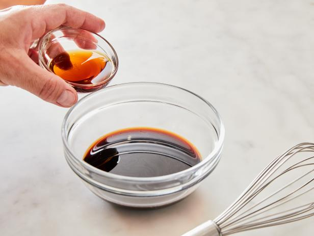

My favourite food
HOW TO MAKE FRIED RICE

STEPS ON MAKING FRIED RICE

- MAKE A SOVORY SAUCE
Fried rice comes together quickly, so make sure you have all your ingredients prepped and measured before
cooking. That includes the sauce that you’ll stir in at the end to season the fried rice (because it’s not
traditional to season the fried rice with salt and pepper). A 2:1 ratio of soy sauce to toasted sesame oil
is a simple place to start.
You can stir in additional ingredients like finely chopped garlic, hoisin
sauce, honey or fish sauce. Have fun playing with the flavors if you’d like — you can customize your sauce
based on whatever you have on hand. For example, this Sweet and Spicy Chicken and Cashew Fried Rice leans on
sweet chili sauce, ginger, soy sauce and chili oil, while this Shrimp Fried Rice relies on simple soy sauce
and sesame oil.
If you’re adding meat or seafood to the stir fry, consider doubling up on the sauce and
using it to marinate the protein for 30 minutes at room temperature. This will add more flavor, but isn’t
necessary if you want to start cooking immediately.

-
CHOOSE QUICK-COOKING DELICATE VEGETABLE
Yep, fried rice is great for using up whatever vegetables you have hanging around the refrigerator. But it’s
important to be strategic and choose vegetables that cook at the same right, and that cook pretty quickly —
otherwise you’ll be standing over the stove for hours.
Whatver you’d typically use in a stirfry is great
for fried rice. Think: snow peas, thinly sliced carrots, spinach, corn kernels, cabbage, mushrooms, bean
sprouts, edamame, scallions, bell pepper slices, etc.
This easy Fried Rice recipe actually uses
rehydrated dried mushrooms, which are budget-friendly and paced with even more flavor than fresh mushrooms.

-
Cook Veggies and Meat Over High Heat in Batches
It’s tempting to add all of the ingredients to the skillet at the same time, but resist the urge. Cooking
the meat, veggies, eggs and rice separately takes just a few extra minutes and ensures non-soggy
results.
Heat a large nonstick skillet over high heat and use neutral vegetable oil like peanut oil. High heat is
important here because you want your meat, rice and veggies to get brown and crispy quickly without totally
overcooking. Cook the meat until it’s just cooked through and transfer it to a large bowl.
Thinly sliced
meat (like the 1/2-inch-thick sliced sirloin steak in Steak Fried Rice), ground meat or shrimp are great
options here because they’re quick-cooking.
Then add a little more oil and cook the veggies until
they’re
crisp-tender; transfer them to the bowl.

-
Scramble the Eggs with Nothing Else in the Skillet
Add a bit of oil to the skillet (which should still be over high heat), add some beaten eggs (1 egg per
every 1 cup of rice is a safe bet)
and scramble them vigorously just about 10 seconds (really, that’s
it!)
until they’re set. Transfer them to the bowl and use a wooden spoon to break them up into bite-size pieces.

-
Add Day-Old Rice (Leftovers!) to the Skillet and Cook Until Crisp
Have you ever made fried rice that’s rather...mushy? Or wet? No good. Leftover rice is fantastic for fried
rice because it’s drier than freshly made rice.
So if you made a big batch of rice earlier in the week
or
have some extra takeout cartons, put them to work. And make sure you check out our guide on how to eat
leftover rice safely. If you don’t have leftovers, just make sure your freshly made rice is cooled
completely before you use it. Add some more oil to the skillet,
add the fried rice, pat it down into a
single layer and let it cook undisturbed for a minute. Then vigorously stir it until the grains dry out,
separate and start to crisp and lightly brown.

-
Add Everything Back to the Skillet with the Sauce
This is when everything comes together! Add the meat, vegetables, eggs and sauce back to the skillet and
stir until the ingredients are evenly distributed. Plate up your creation, garnishing it with some dark
green sliced scallion tops if you’d like it to look extra fancy.
For more inspiration, check out some of
Food Network Kitchen's best fried rice recipes including Pork and Green Bean Fried Rice, Fried Brown Rice
with Shrimp and Vegetables and Kimchi Fried Rice.